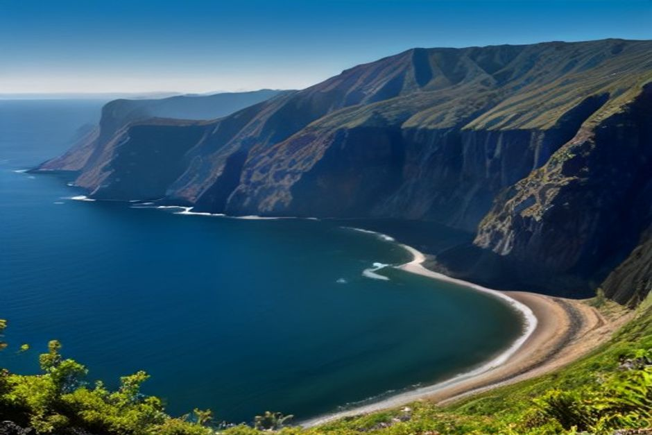
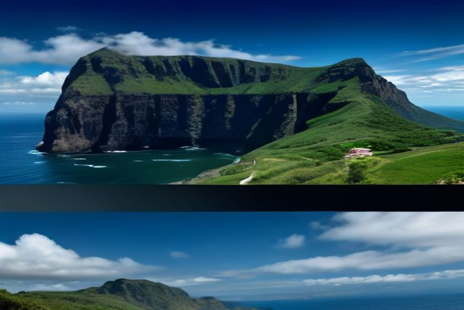

Se avete cercato "Garajau" o "Ponta do Garajau" sulla mappa di Madeira, avete trovato due cose nello stesso punto: una statua di Cristo con le braccia aperte sulla scogliera e, sotto, la prima riserva marina del Portogallo. Si trova sulla costa sud, subito a est di Funchal, e dal 1986 lì non si pesca più. Questa guida vi dice dove sta, cosa c'è da vedere, come fare snorkeling e dove si colloca rispetto al resto dell'isola.
Garajau in breve: dove si trova e quanto è grande
Chi si chiede "quanto è grande Madeira" deve sapere che l'isola è piccola: circa 57 chilometri in lunghezza e 22 in larghezza. Per questo il Garajau è comodo da inserire in qualsiasi programma. Si trova sotto la parrocchia di Caniço, a circa 15-20 minuti di auto da Funchal lungo la strada costiera, e il belvedere del Cristo Rei è indicato dai cartelli sulla ER101.
La riserva copre circa sette chilometri di costa, da Ponta do Lazareto, ai margini di Funchal, a Ponta da Oliveira, a Caniço. Comprende sia gli scogli della riva sia il fondale fino a una profondità stabilita. Oggi la gestisce l'autorità regionale di Madeira per la conservazione della natura.

Perché proprio qui è nata la prima riserva marina
Perché questa barriera era stata pescata quasi a vuoto. Negli anni Ottanta decenni di pesca subacquea e di reti lungo la costa vulcanica avevano fatto sparire per primi i pesci più grandi, quelli che impiegano anni a crescere.
La legge del 1986 vietò del tutto caccia e pesca entro i confini della riserva. Fu la prima in tutto il Portogallo, prima ancora che protezioni simili arrivassero sul continente. Da allora al fondale è stata data una cosa semplice: tempo, senza nessuno che lo disturbasse. Il modello è servito poi per altre riserve di Madeira, comprese le Isole Desertas.
Quarant'anni di pace hanno fatto per questa barriera più di qualunque ripopolamento.
Cosa si vede sott'acqua
Pesci anziani, che è più raro di quanto sembri. Senza pesca, il Garajau ha oggi una popolazione sana di cernia bruna, una specie che vive per decenni e diventa più pesante con gli anni. Un esemplare grande qui è la prova che la protezione funziona.
- Murene nelle fessure delle rocce.
- Anguille giardiniere che ondeggiano sulle zone sabbiose.
- Polpi e grandi banchi di saraghi e castagnole sopra la barriera, in numeri che sulla costa non protetta lì vicino non si vedono.
- Razze, e ogni tanto un diavolo di mare, nelle acque più profonde ai margini della riserva.
Sono animali selvatici: nessuno può garantirvi chi si farà vedere in un dato giorno. Il bello del Garajau è che la probabilità di incontri è molto più alta che altrove sulla costa.

Il Cristo Rei di Ponta do Garajau
La statua non fa parte della riserva dal punto di vista legale, ma è il suo segno più riconoscibile. Alta 15 metri, si erge sulla scogliera con le braccia aperte verso l'Atlantico. Fu inaugurata nel 1927, pochi anni prima del famoso Cristo di Rio de Janeiro, in stile Art Déco, opera dello scultore francese Georges Serraz.
Sta proprio sopra l'acqua che oggi protegge, e il belvedere alla base è uno dei panorami gratuiti più belli della costa sud. Da lì si guarda dritto giù sulla barriera che porta lo stesso nome.
Snorkeling al Garajau: dove entrare in acqua
È il motivo principale per cui la gente ci va. L'accesso pubblico e gratuito è a Caniço de Baixo: una piattaforma sulla spiaggia porta direttamente nelle acque della riserva, quindi si può fare snorkeling senza barca. Lo snorkeling libero non richiede alcun permesso.
- Immersioni con le bombole: di solito si fanno con i diving center di Caniço de Baixo, che sanno quali zone sono aperte in un dato giorno.
- Se andate da soli: restate vicino alla riva e lontano dagli ormeggi delle barche dei sub, perché alcune zone sono riservate a quel traffico.
- Visibilità: in estate supera spesso i 20 metri.
Quando andare: acqua e stagione
L'acqua segue lo schema atlantico del resto della costa sud: circa 18 °C in inverno e 22-23 °C tra luglio e ottobre. Nello stesso periodo di solito si ha anche la visibilità migliore. Se volete lo snorkeling con l'acqua più gradevole, puntate sull'estate e sull'inizio dell'autunno.
Il Garajau dal mare: e Chifbay?
Dalla Marina do Funchal il Garajau è un breve tratto verso est, tanto che le barche in partenza dalla marina lo costeggiano per andare verso Caniço e Santa Cruz. Le uscite di Chifbay vanno nella direzione opposta, verso ovest: Câmara de Lobos, Cabo Girão e Fajã dos Padres, con bagno e paddle board alla Fajã. La barca è tutta per il vostro gruppo, fino a 5 persone, con due skipper abilitati di Madeira.
Se volete confrontare le opzioni, trovate le uscite in tutte le esperienze e un quadro generale in le migliori gite in barca a Madeira. Per orari, punto d'incontro e cancellazione gratuita fino a 24 ore prima, c'è la pagina informazioni pratiche.
Vale la deviazione?
Il Garajau non è spettacolare come Cabo Girão o le Isole Desertas: niente pareti vertiginose, niente grande scena d'oceano aperto. Offre qualcosa di più discreto e, a suo modo, più notevole: mostra com'è la costa di Madeira quando viene lasciata in pace a riprendersi. Per una mezza giornata sulla costa sud, belvedere del Cristo Rei al mattino e snorkeling a Caniço de Baixo subito dopo, è un'ottima scelta.